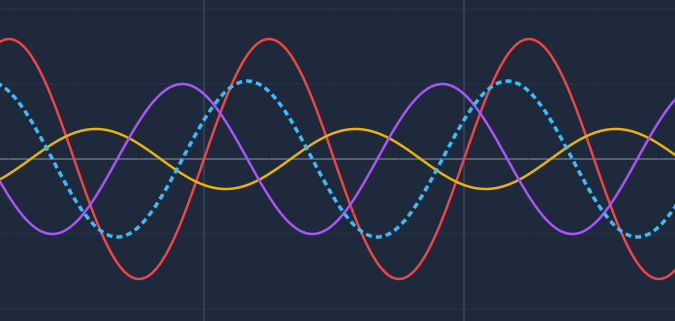
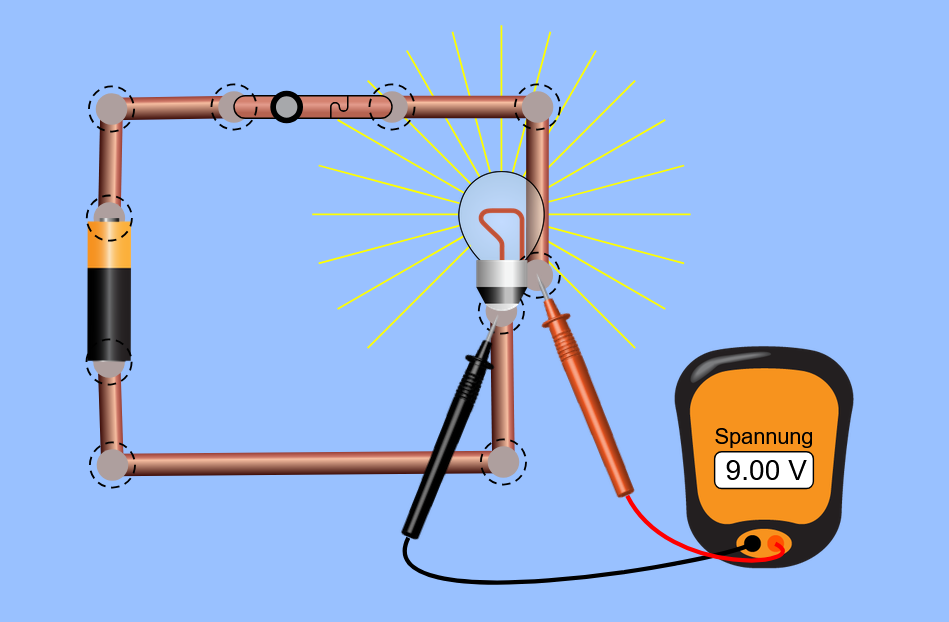

elektrotechnik

Drehstrom - dreiphasiger Wechselstrom
Interaktive Phasenverläufe (L1, L2, L3) verstehen und die Entstehung des Neutralleiterstroms bei ungleicher Belastung simulieren.
Elektrotechnik

Gleichstromlabor
Baue Stromkreise mit Widerständen, Schaltern, Batterien und Voltmessgeräten auf und analysiere Reihen- und Parallelschaltungen.
Unterricht

Digitaler Timer
Interaktiver doppelter Countdown-Timer für Unterrichts- und Arbeitsphasen.
Mathematik

Funktionen & Graphen Explorer
Verändere Parameter von quadratischen Funktionen, Sinuskurven und Exponentialfunktionen live und beobachte die Auswirkungen.
Chemie

Interaktives Periodensystem
Untersuche Schalenmodelle der Atome, Elektronenkonfigurationen, Aggregatzustände bei verschiedenen Temperaturen und Reaktivitäten.
Informatik

Sortieralgorithmen Visuell
Vergleiche Bubble Sort, Quick Sort und Merge Sort schrittweise in Echtzeit und verstehe Laufzeiten sowie Komplexitäten.